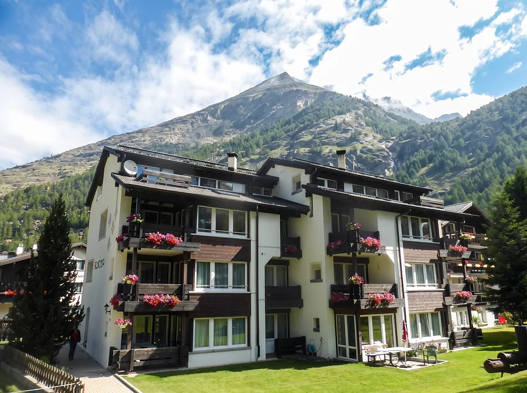

Das Haus · Am BachMitten im Dorf, in ruhiger Lage.
Der rustikale Neubau mit drei Sternen liegt sehr zentral und trotzdem in ruhiger Lage. Direkt daneben fliesst ein Bach vorbei, und Sie haben freie Sicht auf das wunderschöne Bergpanorama.